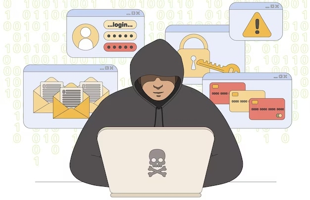

CEO fraud, also known as Business Email Compromise (BEC), is a type of fraud that is enabled via social engineering. Social engineering is the manipulation of situations and people that results in the targeted individuals divulging confidential information. Fraudsters pretend to be a senior manager – often the CEO – in order to persuade a staff member to make a payment.
CEO fraud can have devastating consequences for businesses of all sizes. This type of fraud can be difficult to detect, which is why it is important to be aware of the warning signs. If you receive an email from a senior manager that requests a payment be made urgently, verify the request with the manager directly before taking any action.
If you are unsure about the authenticity of an email, do not hesitate to contact your IT department or security team for assistance. If you want to know more about CEO fraud visit phishprotection.com.
CEO fraud is a type of scam where the fraudster poses as a senior executive in the company and requests an urgent payment to be made to a supplier or partner. This usually happens when the real executive is out of the office, and the fraudster may try to make the request seem confidential and sensitive in order to discourage further verification.
For instance, the fraudster may claim that the company is about to acquire another business and that the payment is needed as a down-payment for the deal.
CEO fraud happens when an attacker does their research and finds out who the decision-makers are in an organization. They then craft an email that appears to be from the CEO or another high-level executive and requests that an employee transfer money to a specific account.
As the CEO of a company, you are in a position of power and trust. Your employees look up to you and rely on you to make the best decisions for the company. Unfortunately, there are some bad apples out there who will take advantage of this trust and commit CEO fraud. This type of fraud can have a devastating effect on a company, so it is important to be aware of the signs and take steps to prevent it.
CEO fraud can take many different forms, but there are some common indicators that something may be going on. If you notice any unusual activity in your company's finances or operations, it is important to investigate. Be sure to keep an eye on your employees, and if you notice any changes in their behavior or unusual activity, that may be a sign that something is not right.
If you suspect that CEO fraud is occurring in your company, it is important to take action immediately. Contact the authorities and your company's legal team to investigate.

In the end, to protect your business from becoming a victim of CEO fraud, it is essential to implement comprehensive policies and procedures to detect and prevent fraudulent activity. Additionally, staff should be educated and trained on the latest security measures and techniques to help spot potential scams. By taking proactive steps to protect your company, you can help ensure your business is safe from this type of fraud.